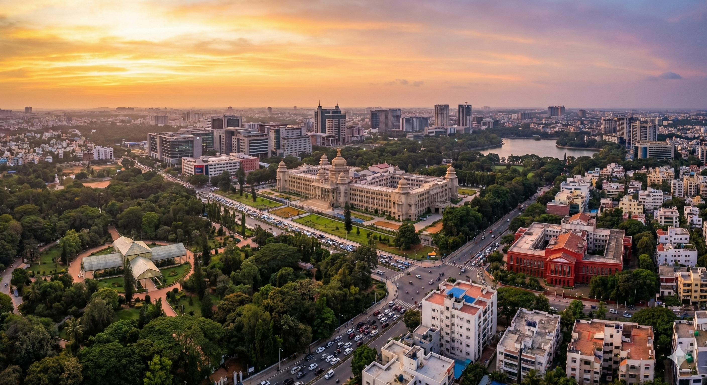

Bangalore (Bengaluru) is the capital city of Karnataka, located in the southwestern part of the state on the Deccan Plateau. It lies at an altitude of approximately 920 meters (3,021 feet) above sea level. Founded over 400 years ago by Kempe Gowda, the city has grown far beyond its original boundaries marked by four historic towers.
Area: Approximately 740 Square Kilometres
Bangalore is a unique blend of tradition and modernity. Widely known as the “Silicon Valley of India,” it is India’s leading IT and startup hub, while also being a center for arts, culture, heritage, and vibrant urban living. Traditional art forms, theatres, and festivals coexist seamlessly with a fast-paced cosmopolitan lifestyle.
Summer: March–April (up to 39°C)
Rainy: July & November (Heavy Rainfall)
Winter: January (Low as 14°C)
Monsoon: Southwest & Northeast
Time Zone: IST (UTC +5:30)
Population: ~9.5 Million
Languages: Kannada, English, Hindi
Literacy: 88%
Republic Day: 26th Jan
Independence Day: 15th Aug
Gandhi Jayanti: 2nd Oct
Major Festivals: Diwali, Dussehra, Christmas
Police: 100
Fire: 101
Ambulance: 102
Traffic Help: 103
Gen Info: +91 88888 88888

Bangalore witnessed a stagnation and temporary decline in rentals around 2009 due to a market slowdown; however, the rental market has steadily recovered and is once again showing growth in several key residential communities. Bangalore has traditionally been a landlord-favoured market, and properties preferred by expatriates continue to command premium rentals.
Availability of transportation, traffic conditions, and daily commuting time should be carefully evaluated. It is advisable for expatriates to either own a car, hire a dedicated driver, or use chauffeur-driven services. While public transport such as auto-rickshaws and buses is widely used by locals, it is generally not recommended for expatriates.
Preferred expatriate residential areas include Sarjapur, Indiranagar, Koramangala, Central Business District (CBD), Whitefield, and Sadashiv Nagar . North Bangalore is also rapidly developing as an expat hub due to the international airport and the growth of major technology parks.
Bangalore offers a wide range of premium and 5-star hotels such as The Leela Palace, Taj West End, The Oberoi, ITC Windsor Sheraton, and Towers. It is highly recommended to book well in advance, as demand frequently exceeds availability.
Flats, villas, and row houses in Bangalore are commonly located within gated communities, ensuring round-the-clock security and professional maintenance. Most modern apartment complexes offer 24-hour electrical, plumbing, and general maintenance services, along with security and power backup.
Clubhouse facilities often include swimming pools, gyms, steam rooms, saunas, and recreational spaces. Some large developments even provide supermarkets and ATMs within the premises.
Independent houses offer greater space, privacy, private gardens, and terraces, but require private security arrangements and higher maintenance efforts.
Villa communities around Bangalore provide an ideal balance—offering the privacy of independent homes along with gated security, maintenance, and clubhouse facilities. Examples include Palm Meadows by Adarsh Developers and Prestige Ozone by the Prestige Group.
Breakdown of available properties:
Availability: Good
Types: Detached (~30%), Semi-detached (~70%)
Style: Bungalows with front yards, 3–4
bedrooms, attached bathrooms, kitchen, and combined living +
dining areas. Most houses also feature private gardens or
terraces.
Average Age: 15–20 years
New Construction (≤5 years): ~10%
Availability: Good
Located in: Small buildings (~65%), Large
complexes (~35%)
Style: Multiple apartments per floor, featuring
a well-sized master bedroom, 2–3 additional bedrooms, attached
bathrooms, kitchen, and combined living + dining areas.
Average Age: 5–10 years
New Construction (≤5 years): ~15%
One of the unique qualities of Bangalore’s housing market is the wide range of options available across low, medium, and high budget segments in almost every major residential area.
Most residential areas are surrounded by parks and gardens, ideal for morning walks, leisure activities, and children’s recreation.
It is recommended to visit shortlisted neighbourhoods at different times of the day to understand traffic patterns, noise levels, parking availability, and actual commute time to schools and workplaces.
Bangalore offers a variety of serviced apartment options, broadly classified as follows:
A. Professionally Run Serviced Apartments
These usually occupy entire buildings and are managed by
professional hospitality companies.
• Dedicated housekeeping and management teams
• Standardized quality and services
• Suitable for expatriates and corporate travellers
B. Stand-Alone Serviced Apartments
A fast-growing segment in Bangalore, though not yet fully
organized.
• Individually owned or managed
• Quality and amenities may vary significantly
• Careful inspection and verification recommended
C. Guest Houses / Shared Accommodation
• Single rooms with shared facilities
• Commonly used by short-term visitors or budget travellers
• Not recommended for expatriates due to privacy and security
concerns
When choosing serviced apartments or hotels, always check for internet, telephone, laundry facilities, and security arrangements. Ensure personal belongings and valuables are securely stored.
In Bangalore, it is standard practice to provide a security deposit ranging from 4 to 10 months’ rent. The deposit is interest-free and refundable at the end of the lease term, subject to deductions for damages if applicable.
Location plays a crucial role when choosing a residence. Consider the following factors carefully:
Confirm whether the quoted rent includes maintenance charges. If utility connections are provided by the landlord, the setup cost is borne by the landlord, while monthly usage charges are payable by the tenant directly to the service providers.
Furniture available for lease is generally pre-owned, and availability varies based on demand and supplier inventory. There is no guarantee on specific styles or quantities. For detailed options, you may contact Kraft Mobility.

Bangalore offers a strong and well-established banking and financial services ecosystem, supported by both national and international banks. Assistance is readily available for opening bank accounts, understanding local financial regulations, and managing currency exchange, ensuring a smooth financial transition for residents and expatriates.
The official unit of currency in India is the Indian Rupee (INR).
Credit cards are increasingly accepted across Bangalore, particularly in malls, restaurants, hotels, and retail establishments. Most banks issue credit cards with revolving credit and cash advance facilities.
RuPay, VISA, and MasterCard are widely accepted. American Express cards are accepted at limited locations and it is advisable to confirm acceptance in advance.
Please note that international credit card transactions may attract additional charges. Check with your issuing bank for exact details.
Bangalore has a widespread and reliable ATM network covering most residential and commercial areas.
Traveller’s cheques are available through most major Indian and international banks.
Commonly available currencies include US Dollar and Pound Sterling, with some banks also offering other major currencies.
A valid passport is mandatory when purchasing or encashing traveller’s cheques.
Banks in Bangalore are categorized into government (public sector) and private banks, which include both local and multinational institutions.
Typical Banking Hours:
Government banks: 10:00 – 14:00 (weekdays)
Private banks: 08:00 – 20:00 (weekdays)
As per Indian Foreign Exchange and Income Tax regulations, foreign nationals employed in India are permitted to open only one bank account per city.
Your relocation consultant may assist you in opening any of the following account types:
Documentation requirements may vary slightly by bank, but generally include:
Opening a savings, salary, individual, or joint account typically takes 2 to 15 working days. An ATM/debit card is usually issued upon request.
All major banks in Bangalore provide secure internet and mobile banking services, enabling customers to access:
These services are available 24/7 and are supported by robust security systems and customer support from most leading banks.

Common health risks in Bangalore include cholera, dengue fever, dysentery, hepatitis, malaria, meningitis, and typhoid. Like many large Indian cities, Bangalore also experiences high levels of air pollution, which may aggravate respiratory conditions.
Individuals with asthma, allergies, or other respiratory ailments are advised to take precautionary measures, particularly during periods of poor air quality.
It is essential to ensure that all routine vaccinations are up to date before relocating or travelling to India.
It is important to know the location of the nearest hospital in advance. Traffic congestion in Bangalore can cause significant delays during emergencies.
In many situations, using a private vehicle or auto rickshaw to reach the emergency room may be faster than waiting for an ambulance, unless the patient is immobile.
If possible, take someone along to assist with registration, paperwork, and payments, as hospitals generally require settlement of bills at various stages of treatment.
Always carry valid identification such as a passport, visa, or Residential Permit (RPRC).
Doctors, clinics, and hospitals are conveniently located throughout Bangalore and are easily accessible. Medical treatment costs are relatively reasonable compared to many international destinations.
Communication with doctors is generally smooth, particularly in private hospitals, where English is widely spoken. Government hospitals may have limited English communication.
The healthcare system largely comprises general physicians and specialists. When selecting a doctor, it is advisable to consider the hospital they are affiliated with for easier emergency admission.
Most medications can be purchased over the counter at pharmacies across Bangalore. Pharmacies are widely available in residential and commercial areas.
If you are currently taking medication, inform your doctor to avoid adverse drug interactions or cross-medication.
Government Emergency Ambulance: 102
Police Emergency Number: 100

Education in Bangalore is available from Kindergarten through Higher Secondary and higher education levels. Early education is largely based on the kindergarten system, while schools are affiliated with various national and international education boards.
Schools in Bangalore are affiliated with boards such as the Karnataka State Board, Council for the Indian School Certificate Examinations (ICSE/ISC), National Open School (NIOS), International General Certificate of Secondary Education (IGCSE), and the International Baccalaureate (IB).
After completion of secondary education, students typically enroll in Pre-University Courses (PUC), also known as Junior College (Grades 11 and 12). Successful completion of PUC allows students to pursue higher education in Bangalore’s wide range of colleges, universities, and postgraduate or research institutions.
With the expansion of industrial and IT corridors, Bangalore has seen a significant rise in international schools catering to expatriate and globally mobile families. All international schools welcome students of any nationality and reflect multicultural values within their curricula.
Bangalore is well known for its language training institutes, catering to students and professionals aspiring to study or work abroad.
Electricity charges in Bangalore are relatively high and increase based on consumption slabs. The payment due date is clearly printed on the electricity bill.
Residents living in independent houses receive monthly water bills. Payment due dates are specified on the bill.
Door-to-door garbage collection is available in most Bangalore localities, usually on a daily basis. In gated communities, garbage collection schedules may vary.
Bottled LPG gas is available through neighbourhood suppliers.
Due to India’s tropical climate, periodic pest control is recommended to manage cockroaches, flies, mosquitoes, and other insects.
Pest control services are widely available. Ensure that chemicals used are approved by the World Health Organisation (WHO), especially in households with children or pets.

Once you move into your residence in Bangalore, the local community cable network personnel usually visit the property to offer a new connection. Alternatively, they can be contacted through neighbours or the building association.
A nominal installation fee is charged for setting up the connection. Installation typically takes about 2 days. Monthly subscription charges are generally paid in cash, and a receipt is issued by the cable operator.
Most cable providers offer a wide range of popular channels including STAR, ESPN, HBO, National Geographic, and Discovery , along with regional channels in Kannada, Hindi, and English.
For a complete and updated list of available channels, it is recommended to contact your local cable operator directly.
Direct-To-Home (DTH) satellite television services are widely available across Bangalore. Popular providers include:
DTH services require a one-time setup fee covering the satellite dish, receiver/set-top box, and subscription package (monthly or yearly).
Installation generally takes 2–5 working days, depending on technician availability.
DTH providers offer extensive channel line-ups including SD and HD channels in multiple languages. Channel packages and pricing can be customized based on personal preference.
Bangalore has several FM radio stations that are freely accessible. No subscription fee is required, and channels can be tuned using any standard FM radio set or compatible mobile devices.
Radio stations broadcast a mix of music, talk shows, news updates, and entertainment content catering to a wide audience.
Bangalore offers a wide selection of daily newspapers in English, Kannada, and Hindi.
Popular English dailies include The Hindu, The Times of India, and Deccan Herald, along with several regional-language newspapers.
Newspapers can be accessed through:
Bangalore has a well-established network of post offices located close to most residential and commercial areas, providing reliable mailing and communication services.
Postal services include:
For detailed information regarding services, charges, and operating hours, please visit the nearest local post office.

Telephone and broadband connections in Bangalore are available through both government and private service providers.
The government-owned provider BSNL and private operators such as Airtel, Vodafone, and Jio offer landline and broadband connections across most residential and commercial areas of the city.
Installation timelines vary by provider. Private service providers generally complete installation within 2–5 days, while installations by BSNL may take 7–14 days.
Documents Required:
A refundable security deposit is payable along with installation charges at the time of application. In the case of private service providers, the connection may be temporarily suspended if usage exceeds the deposited amount before the billing cycle ends.
Bills are raised on a monthly basis, and the due date is clearly mentioned on the bill. Timely payment is advised to avoid service disconnection. Bills can be paid online, at service provider offices, or at authorized bill payment centers.
Service providers offer multiple usage-based packages, which can be upgraded or modified at a later stage based on requirements.
In some cases, landlords provide a pre-installed landline. In such situations, no setup cost is incurred and only the monthly rental and usage charges are borne by the tenant.
All major service providers allow international calling. This feature must be requested at the time of application. International calling rates vary by provider and should be confirmed in advance.
The international dialing prefix from India is 00.
Public phone booths displaying PCO / STD / ISD signs are now rarely available in Bangalore, as mobile phones have largely replaced public pay phones.
Bangalore has extensive mobile network coverage with major GSM service providers such as Vodafone, Jio, and Airtel.
These providers offer a wide range of postpaid and prepaid plans based on usage preferences.
Postpaid connections require a nominal security deposit along with activation charges. An additional deposit may be required to enable international roaming.
Prepaid SIM cards (pay-as-you-go services) are easily available at local mobile stores across the city.
As per government regulations, activation of any new mobile connection requires submission of a valid photo ID and proof of address.
Internet connectivity in Bangalore is provided by major service providers such as Airtel, Jio, Tata Fibre, and BSNL.
Broadband services are delivered through wired telephone lines and fiber-optic networks, depending on location.
Once your residence is finalized, it is recommended to check area-specific coverage with the chosen service provider.
A wide range of internet packages is available based on speed, data usage, and duration, catering to both residential and business needs.

Bangalore offers several modes of transportation for travel within the city. These include cabs, chauffeur-driven cars, auto rickshaws, buses, city taxis, and metro rail services (available in select areas).
For expatriates, the use of app-based cabs and chauffeur-driven cars is strongly recommended due to safety, convenience, and ease of navigation. Popular services include Ola, Uber, and InDrive.
Several cab agencies and app-based services operate metered vehicles across Bangalore. Bookings can be made via mobile applications or by calling local taxi operators.
Many drivers may not be fluent in English and may drive aggressively. App-based services are generally safer due to GPS tracking and digital payment options.
Popular App-Based Cab Services:
Bus services in Bangalore are operated by the Bangalore Metropolitan Transport Corporation (BMTC). BMTC buses cover most parts of the city and are an economical mode of transport.
While buses are often crowded, air-conditioned Volvo buses provide a more comfortable option. However, for expatriates unfamiliar with local routes and languages, buses may not be the most convenient choice.
Auto rickshaws are one of the most commonly used local transport options in Bangalore.
Always insist on using the meter and do not pay more than the displayed fare. If the meter is not working, fix the fare in advance before starting the journey.
Drivers often charge 1.5 to 2 times the meter fare between 9:00 PM and 7:00 AM.
The Bangalore Metro (Namma Metro) operates in select corridors of the city and continues to expand.
The metro provides a reliable alternative to road transport in areas it services and is gradually reducing traffic congestion.
Name: Kempegowda International Airport
Location: Devanahalli, approximately 40 km from
Bangalore’s central business district
Connectivity:
The Vayu Vajra service operates 24/7 using Volvo buses, covering multiple routes across the city. Routes are identified using the KIAS prefix.
Official Website: Kempegowda International Airport
Both international and local car rental companies operate in Bangalore, offering chauffeur-driven and self-drive options.
Some popular providers include:
Due to heavy traffic, lack of lane discipline, and road congestion, self-driving is generally not recommended for newcomers. Chauffeur-driven cars are a safer and more comfortable option.
If your organization has a tie-up with a rental agency, corporate rates may be available. Billing is usually calculated from the time the vehicle leaves the garage until it returns.
Driving in Bangalore is not recommended for those unfamiliar with local traffic conditions. Roads are often congested, traffic rules are loosely followed, and lane discipline is poor.
Hiring a driver or using chauffeur-driven vehicles is advisable for daily commuting.
Foreign nationals may drive in India using a valid International Driving Permit (IDP) along with their home country driving licence for a limited duration.
For long-term stays, applying for an Indian driving licence is recommended.
Importing a vehicle into India is legally permitted but involves strict regulations, extensive documentation, and high import duties of approximately 150% of the CIF value.
If purchasing a vehicle locally, consider:
Used cars and two-wheelers are widely available and may be more economical. Ensure ownership documents are thoroughly verified and use reputable dealers.

Indian nationals and foreign nationals, including persons of Indian origin, transferring their residence to Bangalore or arriving in India for employment are permitted to import personal effects and household goods into India free of duty, subject to specific conditions.
For Indian nationals, the following conditions apply:
For foreign nationals relocating to Bangalore, a valid Employment / Work Visa with a minimum validity of one year is mandatory.
Foreign nationals must complete registration with the Foreigners Regional Registration Office (FRRO) and obtain a Residential Permit, which is a mandatory document for customs clearance.
The original passport must be produced at the time of customs clearance.
If shipments are dispatched beyond the above timelines, customs clearance may be permitted only on a case-by-case basis, subject to customs approval.
It is essential that the owner arrives in India before the shipment arrives. Failure to do so may result in substantial demurrage and container detention charges.
Shipments destined for Bangalore are generally cleared at Chennai Port, Mumbai Port (JNPT), or Bangalore International Airport, and then transported by road to the final residence.
The earlier requirement of a mandatory one-year stay in India after availing Transfer of Residence (TR) benefits has been removed. Importers are now permitted to leave India even after claiming TR concessions.
Old and used personal effects and household goods are permitted to be imported duty-free, provided they have been used by the shipper and the individual holds a valid one-year visa.
Examples include:
The following items are also allowed duty-free when imported within permitted limits:
New articles (other than those listed below) attract import duty at 35%.
The following items are eligible for a concessional duty rate of 15%, limited to one unit of each item, subject to a combined value cap of ₹500,000 (approx. USD 10,000), irrespective of usage:
The concessional duty rate of 15% applies only to the first unit of each eligible item.
If more than one unit of any listed item is imported, or if the combined value exceeds ₹500,000 (USD 10,000), the excess units or value will attract a duty rate of 35%.
Import duties on alcohol, wines, spirits, and similar items are extremely high in India, typically around 200% of the value assessed by customs. Importing such items is generally discouraged.

Bangalore has a well-established and welcoming expatriate community, supported by several social and cultural organizations that help newcomers settle into life in the city.
One of the most prominent groups is the Overseas Women’s Club (OWC) of Bangalore, a social and charitable organization comprising women from many nationalities and cultural backgrounds.
OWC is known for its friendly and inclusive environment, offering support and guidance to new members as they adapt to a new city and culture. Regular coffee mornings are held on Thursday mornings at the Leela Palace.
Monthly meetings are also organized on Monday mornings at the ITC Windsor, providing opportunities to learn more about Bangalore while building strong social connections.
The club conducts a wide range of activities, social events, and fundraising initiatives, many of which are dedicated to supporting charitable causes across the city.
Bangalore, widely known as the IT capital and Silicon Valley of India, offers an excellent balance between a demanding professional lifestyle and diverse leisure opportunities.
Despite the fast-paced work culture, the city provides ample options for relaxation and entertainment—whether it is watching movies, visiting clubs, or enjoying quality family time at resorts and pools.
From pubs and shopping malls to auditoriums and art galleries, Bangalore offers something for everyone and is widely regarded as a major centre for entertainment and leisure in India.
The city has a long-standing club culture, with some clubs dating back to the British era, alongside newer clubs and resorts that have emerged in recent years.
Well-known clubs such as the Bangalore Club and Century Club continue to provide excellent recreational and social facilities.
Golf enthusiasts can enjoy premium courses at the Eagleton Golf Resort or the Karnataka Golf Association.
Cinema is one of the most popular forms of entertainment in Bangalore, with numerous movie theatres and multiplexes spread across the city.
Bangalore was among the first Indian cities to adopt the multiplex concept, and many theatres are conveniently located near restaurants and cafés, offering a complete entertainment experience.
Popular multiplex chains in Bangalore include:
Bangalore is a shopper’s paradise, offering everything from affordable roadside shopping to premium international brands.
The city has numerous shopping malls that combine retail outlets, restaurants, entertainment zones, and children’s play areas under one roof.
Popular shopping malls in Bangalore include:
Bangalore’s rich cultural heritage is reflected in its many auditoriums, which regularly host dance performances, music concerts, theatre productions, and cultural programs.
These venues attract artists and audiences from across Karnataka and other parts of India, offering a vibrant cultural experience.
Art enthusiasts will find Bangalore’s art scene lively and engaging, with numerous galleries showcasing works by local, national, and international artists.
These galleries provide an excellent platform to explore contemporary and traditional art forms while interacting with the city’s creative community.
Families can enjoy weekend outings at amusement parks across Bangalore, offering entertainment options such as video games, bowling, rides, and children’s play zones.
These parks feature slides, indoor games, and activity areas designed especially for children, making them ideal for family recreation.
Bangalore’s geographical location makes it an excellent base for exploring various destinations across South India.
The surrounding topography provides ample opportunities for nature lovers and adventure enthusiasts, including scenic drives, hill regions, and outdoor recreational activities.

Shopping in Bangalore city is a remarkable experience that blends modern luxury with traditional charm. As the capital of Karnataka and India’s leading IT hub, Bangalore offers a vibrant and diverse retail landscape shaped by a young, cosmopolitan population.
The city is dotted with bustling shopping streets, traditional markets, department stores, and glistening modern malls. From fashionable apparel, footwear, and jewellery to traditional silk sarees, sandalwood handicrafts, antiques, electronics, and even automobiles, Bangalore truly lives up to its reputation as a shopper’s paradise.
Bangalore features traditional markets with shops aligned along specific roads as well as large malls that house numerous national and international brands under one roof. Many of the most popular shopping areas are located around the central business district.
Vittal Mallya Road is one of Bangalore’s most premium shopping destinations. The area is known for luxury retail and upscale department stores featuring international brands such as Versace and Louis Vuitton.
This road also houses fine-dining restaurants and cafés, making it a preferred destination for high-end shopping and leisure.
Located in the heart of Bangalore, M G Road is one of the city’s most popular shopping and commercial areas. Formerly known as South Parade, it is a key landmark and a favourite among tourists.
Shops along M G Road stock a wide variety of items including traditional handicrafts, apparel, footwear, books, curios, and lifestyle products. Several shopping complexes and department stores are also located here.
Situated close to M G Road, Residency Road is known for its state emporia and specialty stores selling handicrafts, furniture, antiques, and traditional art pieces.
This area is ideal for shoppers looking for authentic regional products and quality craftsmanship.
Brigade Road is one of the busiest commercial and shopping streets in Bangalore, connecting M G Road to Hosur Road.
The street is lined with garment stores, electronics shops, pubs, restaurants, and cafés. It is especially popular among young shoppers due to its vibrant atmosphere and trendy retail options.
Located near the central business district and Vidhan Soudha, Commercial Street is among the busiest shopping areas in Bangalore.
The street features shops selling designer products, international brands, jewellery, textiles, books, art items, and lifestyle goods. Both locals and tourists frequent this area for its wide variety and competitive pricing.
Situated in Malleswaram, Sampige Road is known for its traditional markets, including flower and fruit vendors.
Shops here sell silk sarees, handicrafts, religious items, traditional sweets, and fabrics, making it a popular destination for cultural and festive shopping.
Gandhi Bazaar is one of the oldest shopping areas in Bangalore and is deeply rooted in local culture.
Shoppers can find fruits, groceries, traditional clothing, silk sarees, household goods, electronics, and everyday essentials at reasonable prices.
Chikpete is a narrow street market located in the old part of the city and is famous for its wholesale and bargain shopping.
The area is particularly popular for silk sarees available at competitive prices and also hosts several gold and silver jewellery shops.
In addition to these major shopping streets, almost every locality in Bangalore has its own market with a variety of local shops and supermarkets catering to daily needs.
Bangalore has fully embraced mall culture, offering world-class shopping, dining, and entertainment experiences across the city.
Popular malls in Bangalore include:
These malls complement Bangalore’s traditional shopping streets, providing shoppers with options ranging from budget-friendly stores to premium luxury brands—all within the same city.